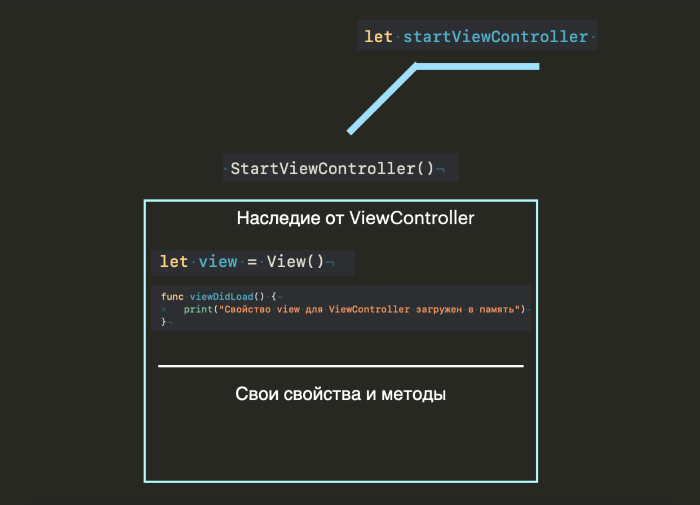
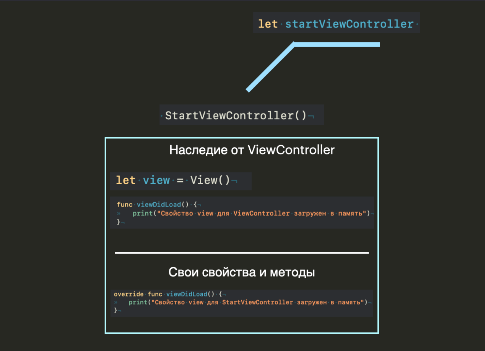

Урок 23. Наследование. Часть 2.
30 Мая 2023

Загрузить материалы к уроку.
Переопределение методов.
На прошлом уроке мы с вами выяснили, что при наследовании нам доступны все публичные методы и свойства супер класса. Помимо того что мы можем ими пользоваться, у нас так же есть возможность их переопределять, то есть переписать их логику.
Давайте обратимся к примеру:
Предположим у нас есть какой-то шаблонный класс для экрана телефона ViewController, в нем есть свойство view, которое отвечает за background экрана и является экземпляром класса View. На основе шаблона ViewController мы создаем стартовый экран, в котором нам доступны все свойство и методы супер класса (напомню, что супер классом называют тот класс от которого наследуемся).
В данном случае метод viewDidLoad выводит на консоль сообщение о том что view класса ViewController была загружена в память, и если мы создадим экземпляр класса StartViewController, и вызовем этот метод, на косоли мы увидим соответствующее сообщение:
Давайте примерно посмотрим как это будет выглядит в памяти:
Конечно в памяти все гораздо сложнее, но нам сейчас главное понимать откуда появляются наши свойства и методы, а более подробней о памяти мы поговорим с вами на втором модуле.
Вернемся к нашей задачи, было бы хорошо что бы при вызове метода viewDidLoad из экземпляра класса startViewController мы видели сообщение: Свойство view для StartViewController загружен в память.
Как уже было отмечено выше мы можем переопределять (переписывать) логику методов и вычисляемых свойств супер класса, для этого нам необходимо создать одноименный метод в StarViewController, который мы хотим переопределить с ключевым словом override:
В целом, если вы начнете создавать в классе StartViewController метод с точно таким же именем что и метод супер класса, то компилятор сам вам подскажет добавить override.
Таким образом мы переписываем логику метода viewDidLoad, и при вызове его из экземпляра класса StartViewController мы увидим новое сообщение:
Давайте снова обратимся к нашей памяти и посмотрим что там изменилось:
Мы переписали метод, но родительская реализация метода все еще существует, она просто перекрывается новой реализацией в подклассе.
При этом мы можем так же вызвать метод супер класса в нашем переопределенном методе, нам достаточно обратиться к нему через super:
super обозначает супер класс, от которого мы наследуемся. Таким образом мы получим на консоли два сообщения, первое от вызова метода super.viewDidLoad, а второе от переопределенного viewDidLoad. Это очень удобно когда вам нужна какая то своя реализация логики.
Мы можем переопределять (переписывать) любой из унаследованных методов, какая бы не была глубина наследования.

Переопределение геттеров.
Помимо методов у нас так же есть возможность переопределять геттеры.
Посмотрим на примере:
В целом не сильно отличается от переопределения методов, мы точно так же должны пометить свойство ключевым словом override и переписать логику на новый лад.
Точно так же мы можем обратиться к изначальному состоянию свойства из супер класса:
Переопределение инициализаторов.
Из прошлых уроков мы выяснили что инициализатор это встроенный метод объекта, в нашем случае класса, а это значит что мы точно так же их можем переопределить.
Давайте создадим шаблонный класс для кнопки Button:
Далее создадим кастомную кнопку, и унаследуемся от базового класса Button:
Внутри метода setupDoneButton, мы настраиваем цвет фона и радиус скругления для кнопки, и так как это первичная настройка, то эти свойства должны принять свои новые значения именно в момент создания этой кнопки, то есть в момент создания экземпляра класса DoneButton, но в данной реализации у нас не получится вызвать этот метод в момент создания экземпляра:
Когда мы создали экземпляр класса doneButton, пользователь увидит эту кнопку на экране, всю целиком, с теми настройками которые были определены в супер классе, то есть с белым фоном и радиусом 10, так как метод по изменению этих значений пока не был вызван:
Мы могли бы решить эту проблему созданием своего инициализатора в классе DoneButton:
То есть мы создаем свой инициализатор и прописываем в нем все новые свойства, если вы не понимаете как работает этот инициализатор, то советую перечитать прошлый урок.
Теперь пользователь будет видеть обновленные данные, но что если мы не хотим создавать инициализатор с дополнительными свойствам, ведь этих свойств может оказаться очень много, и нам будет не удобно их все перечислять в инициализаторе, и первое что приходит в голову, это инициализировать свойства внутри инициализатора:
Но здесь есть одна проблема, этот инициализатор выглядит точно так же как унаследованный, а это значит что система предложит вам добавить ключевое слово override:
Таким образом в момент создании кнопки мы получим новые настройки и пользователь будет доволен.
Нужно по возможности делать инициализаторы компактными, поэтому можно создать дополнительный метод, который будет заниматься настройкой, и его уже вызывать в инициализаторе:
Это очень популярный случай переопределения инициализатора.
Давайте подведем итог.
Переопределение – задать новое значение для свойства, переписать логику метода или вычисляемого свойства.
Все унаследованные от супер класса публичные (то есть доступные из экземпляра класса) методы и свойства можно переопределить.